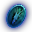

Biyolog Chaegirab

30. seviyeye geldiysen beni bul. Yongan 896, 610, Joan 898, 797, Pyungmoo 285, 285 noktalarında duruyorum.
İstediğim eşyaları getir ama her getirdiğini kabul etmem. 23 saatte bir denersin, sayı dolunca ruh taşını da getirirsin. Ödülünü Baek-Go verir.
Görev Listesi
| Seviye | Görev | Eşya | Bonus |
|---|---|---|---|
| 30 | Biyoloğun Deneyi 1Seungryong Vadisi | +%10 Hareket Hızı | |
| 40 | Biyoloğun Deneyi 2Hwang Tapınağı | +%5 Saldırı Hızı | |
| 50 | Biyoloğun Deneyi 3Şeytan Kulesi | +60 Defans | |
| 60 | Biyoloğun Deneyi 4Sohan Dağı | +50 Saldırı Değeri | |
| 70 | Biyoloğun Deneyi 5Hayalet Orman | +%11 Hareket Hızı ve +%10 Savunma | |
| 80 | Biyoloğun Deneyi 6Yılan Vadisi veya Devler Diyarı | +%6 Saldırı Hızı ve +%10 Yakın Dövüş Saldırı | |
| 85 | Biyoloğun Deneyi 7Kızıl Orman | +%10 Savaşçı/Sura/Ninja/Şaman/Lycanlara karşı savunma | |
| 90 | Biyoloğun Deneyi 8Eski Kıta patronları | +%8 Savaşçı/Sura/Ninja/Şaman/Lycanlara karşı güçlü | |
| 92 | Seon-Pyeong Araştırması 1Sürgün Mağarası 1. Kat | +1.000 Max. HP veya +120 Defans veya +51 Saldırı Değeri | |
| 94 | Seon-Pyeong Araştırması 2Sürgün Mağarası 2. Kat |  Beran-Setaou Ruh Taşı | +1.100 Max. HP veya +140 Defans veya +60 Saldırı Değeri |
Notlar
92 ve 94. seviye görevleri Seungryong Vadisi'nde 295, 1442 noktasındaki Seon-Pyeong'dan alınıyor. Burada bekleme 12 saat. Bonusu üç seçenekten kendin seçiyorsun ve seçim geri alınmıyor.
Araştırmacının Özütü teslimde kabul şansını artırıyor, Hızlandırıcı da bekleme süresini kısaltıyor.
5. görevden itibaren eşyalar yalnız görevi almış karakterlere düşüyor.